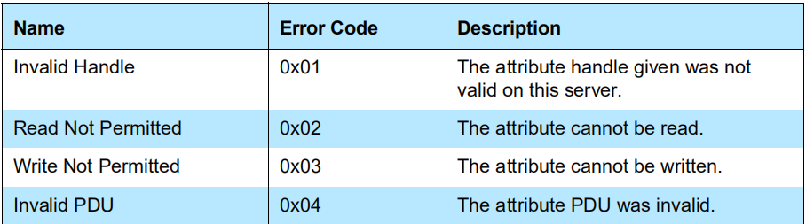

Zephyr - GATT
发现过程
int bt_gatt_discover(struct bt_conn *conn,
struct bt_gatt_discover_params *params);
Zephye BLE 里 GATT 发现过程的接口为 bt_gatt_discover，BLE 客户端使用该函数发现服务端上的属性。第一个参数 conn 为连接的句柄，我们一般不直接读写它，而是由协议栈完成；重点需要关注的是第二个参数 param ，它决定了发现的内容是什么：服务（Service）、包含服务（Include Service）、特征（Characteristic）还是特征描述符（Characteristic Descriptor）。返回 0 表示成功，其他值表示失败。
该函数是异步的，因此参数 param 需要一直保持有效，最好为全局变量。
bt_gatt_discover_params
struct bt_gatt_discover_params {
/** Discover UUID type */
const struct bt_uuid *uuid;
/** Discover attribute callback */
bt_gatt_discover_func_t func;
union {
struct {
/** Include service attribute declaration handle */
uint16_t attr_handle;
/** Included service start handle */
uint16_t start_handle;
/** Included service end handle */
uint16_t end_handle;
} _included;
/** Discover start handle */
uint16_t start_handle;
};
/** Discover end handle */
uint16_t end_handle;
/** Discover type */
uint8_t type;
#if defined(CONFIG_BT_GATT_AUTO_DISCOVER_CCC)
/** Only for stack-internal use, used for automatic discovery. */
struct bt_gatt_subscribe_params *sub_params;
#endif /* defined(CONFIG_BT_GATT_AUTO_DISCOVER_CCC) */
};
以下列举常用的参数：
uuid：指向要发现的 UUID ，bt_uuid结构体使用了面向对象的封装手法，在最后有介绍。start_hanlde：发现的起始 handle，参考 ATT 协议。stop_handle：发现的结束 handle。type：发现类型，一共有六种，根据想要发现的内容自行填充。
enum {
BT_GATT_DISCOVER_PRIMARY, // 发现主要服务（常用）
BT_GATT_DISCOVER_SECONDARY, // 发现次要服务
BT_GATT_DISCOVER_INCLUDE, // 发现包含服务
BT_GATT_DISCOVER_CHARACTERISTIC,// 发现特征（常用）
BT_GATT_DISCOVER_DESCRIPTOR, // 发现特征描述符（常用）
BT_GATT_DISCOVER_ATTRIBUTE, // 发现属性
};
func：回调函数，找到发现的内容时会回调该函数，后面会有详细介绍。
其中 type 字段还影响到了发现函数 bt_gatt_discover 的行为：
发现主要服务：函数会根据
uuid查找特定的主要服务。发现包含服务：函数会在 $[start_handle, end_handle]$ 里查找所有的包含服务。
发现特性：函数会在 $[start_handle, end_handle]$ 里查找所有的特征，同时也会根据
uuid查找特定的特征。发现特征描述符：函数会在 $[start_handle, end_handle]$ 里查找所有的特征描述符。
bt_gatt_discover_func_t
typedef uint8_t (*bt_gatt_discover_func_t)(struct bt_conn *conn,
const struct bt_gatt_attr *attr,
struct bt_gatt_discover_params *params);
该函数类型就是上述 bt_gatt_discover_params 里回调函数 func 的类型，当发现过程中找到了相应的属性会回调该函数。
参数：
conn：连接句柄。attr：发现的属性，如果未找到则为 NULL。params：发现过程参数，也就是bt_gatt_discover函数里传入的参数。
返回值：
BT_GATT_ITER_CONTINUE：继续发现过程。BT_GATT_ITER_STOP：停止发现过程。
该回调函数的使用方法大致如下：

一般一个 bt_gatt_discover_func_t 用于处理一个服务端所有需要发现的服务，特征以及描述符，当找到所有需要的属性或者传入的 attr 为 NULL 时，代表需要结束发现过程了，此时返回 BT_GATT_ITER_STOP 结束发现过程。可以参考例程：samples/bluetooth/central_ht 。
现在来看看传入的 bt_gatt_attr 这个结构体，
struct bt_gatt_attr {
const struct bt_uuid *uuid;
ssize_t (*read)(struct bt_conn *conn, const struct bt_gatt_attr *attr,
void *buf, uint16_t len, uint16_t offset);
ssize_t (*write)(struct bt_conn *conn, const struct bt_gatt_attr *attr,
const void *buf, uint16_t len, uint16_t offset,
uint8_t flags);
void *user_data;
uint16_t handle;
uint8_t perm;
};
uuid：属性的 UUID 。handle：属性 handle 。perm：属性的权限。user_data：用户数据。read：属性读回调函数（使用未知）。write：属性写回调函数（使用未知）。
一般在发现过程中需要保持属性 handle 值，以便后续读写。
读属性过程
int bt_gatt_read(struct bt_conn *conn, struct bt_gatt_read_params *params);
Zephyr BLE 协议栈里读属性值使用的接口为 bt_gatt_read，该函数可以同时处理
读属性值
读长属性值（属性值大小大于 ATT_MTU-1）
一次读取多个属性
的情况，其中 conn 为建立的连接，param 为读取时传入的参数。该函数是异步的，读取到属性值后会调用传入回调函数，因此需保持 param 一直有效。
struct bt_gatt_read_params {
/** Read attribute callback. */
bt_gatt_read_func_t func;
/** If equals to 1 single.handle and single.offset are used.
* If >1 Read Multiple Characteristic Values is performed and handles
* are used.
* If equals to 0 by_uuid is used for Read Using Characteristic UUID.
*/
size_t handle_count;
union {
struct {
/** Attribute handle. */
uint16_t handle;
/** Attribute data offset. */
uint16_t offset;
} single;
/** Handles to read in Read Multiple Characteristic Values. */
uint16_t *handles;
struct {
/** First requested handle number. */
uint16_t start_handle;
/** Last requested handle number. */
uint16_t end_handle;
/** 2 or 16 octet UUID. */
const struct bt_uuid *uuid;
} by_uuid;
};
};
func：回调函数，读取到属性值时会回调该函数，可能会多次回调。handle_count：该参数决定了使用之后 union 结构体的哪一个字段。= 0 ：
by_uuid会被使用，在 $[start_handle, end_handle]$ 之间读取特征 UUID 为uuid的特性值。= 1 ：
single会被使用，用于读取长属性。> 1 ：
handles会被使用，用于一次读取多个属性。
by_uuid 使用的较多，读取特征值都会使用它。
再来看看 bt_gatt_read_func_t 这个回调函数类型，
typedef uint8_t (*bt_gatt_read_func_t)(struct bt_conn *conn, uint8_t err,
struct bt_gatt_read_params *params,
const void *data, uint16_t length);
该函数有两种返回值：
BT_GATT_ITER_CONTINUE：继续尝试读取下一个属性值。BT_GATT_ITER_STOP：停止读取属性的过程。
其传入的参数有：
conn：连接句柄。err：ATT 错误码，相关描述可以在 att.h 文件里找到，也可以在 Core Spec 里找到
Core_v5.2 - Vol 3: Host - Part F: Attribute Protocol (ATT)
3 Protocol requirements - 3.4 Attribute protocol PDUs - Error handling
这里列举了常用的 ATT 错误码。

params：之前定义的参数。data：读取到的属性值缓冲区（为 NULL 代表属性读取完成）。length：属性值缓冲区大小。
写属性过程
int bt_gatt_write(struct bt_conn *conn, struct bt_gatt_write_params *params);
套路跟发现过程和读属性过程一样，
typedef void (*bt_gatt_write_func_t)(struct bt_conn *conn, uint8_t err,
struct bt_gatt_write_params *params);
/** @brief GATT Write parameters */
struct bt_gatt_write_params {
/** Response callback */
bt_gatt_write_func_t func;
/** Attribute handle */
uint16_t handle;
/** Attribute data offset */
uint16_t offset;
/** Data to be written */
const void *data;
/** Length of the data */
uint16_t length;
};
这里的 params 里的参数意义是：向服务端 handle 处的属性值的偏移 offset 处写入输入 data，长度为 length 。
通知指示过程
int bt_gatt_subscribe(struct bt_conn *conn,
struct bt_gatt_subscribe_params *params);
int bt_gatt_unsubscribe(struct bt_conn *conn,
struct bt_gatt_subscribe_params *params);
bt_gatt_subscribe 用于订阅一个通知或指示（Notify or Indication）。bt_gatt_unsubcribe 用于取消订阅。
struct bt_gatt_subscribe_params {
/** Notification value callback */
bt_gatt_notify_func_t notify;
/** Subscribe CCC write request response callback */
bt_gatt_write_func_t write;
/** Subscribe value handle */
uint16_t value_handle;
/** Subscribe CCC handle */
uint16_t ccc_handle;
#if defined(CONFIG_BT_GATT_AUTO_DISCOVER_CCC)
/** Subscribe End handle (for automatic discovery) */
uint16_t end_handle;
/** Discover parameters used when ccc_handle = 0 */
struct bt_gatt_discover_params *disc_params;
#endif /* CONFIG_BT_GATT_AUTO_DISCOVER_CCC */
/** Subscribe value */
uint16_t value;
/** Subscription flags */
ATOMIC_DEFINE(flags, BT_GATT_SUBSCRIBE_NUM_FLAGS);
sys_snode_t node;
};